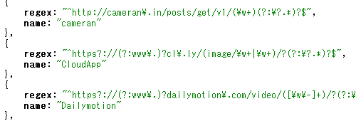
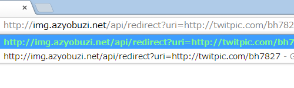
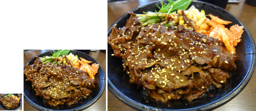

img.azyobuzi.net へようこそ！
img.azyobuzi.net は画像共有サービスに投稿された画像にアクセスする最適なソリューションです。サムネイルからオリジナルサイズの画像まで取得できるので、様々な用途にご利用いただけます。
特徴
- 正規表現の公開。
- 
- 各画像共有サービスの Permalink の正規表現を公開しているので、クライアントでの処理が簡単に出来ます。
- 画像へ直接リダイレクト。
- 
- パラメータに URI をつけるだけで画像へ直接リダイレクトされるので、リッチクライアントでも web でも、開発者以外でも簡単にご利用いただけます。
- 3 種類のサイズを用意。
- 
※イメージです。実際のこの写真はもっと大きさに差がありました。 - azyobuzin の独断と偏見で 3 種類のサイズをご用意しました。クライアントでのサムネイル表示から、 lightbox まで幅広くご利用いただけます。
- オープンソースプロジェクト。
- MIT License の下でソースコードを公開していますので、類似サービスやミラーサイトの作成が簡単に出来ます。
- azyobuzin/img.azyobuzi.net on GitHub
はじめよう
あなたのコードに、ほんの数行書き加えるだけで、サムネイル表示ができるリッチなアプリケーションができあがります。 API ドキュメントを読んで、作業を開始しましょう。
要望がありますか？
新たな画像共有サービスへの対応依頼はこちらのアンケートフォームへ、その他のご意見・ご要望は Twitter @imgazyobuzi までお願いいたします。